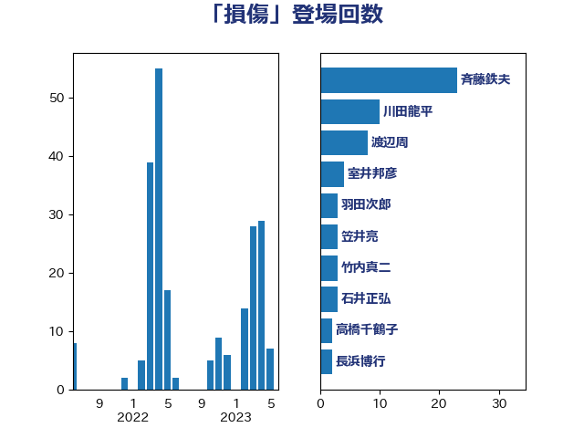

単語「損傷」

| 斉藤鉄夫 | 公明党 | 23 回 |
| 川田龍平 | 立憲民主党 | 10 回 |
| 渡辺周 | 立憲民主党 | 8 回 |
| 室井邦彦 | 日本維新の会 | 4 回 |
| 羽田次郎 | 立憲民主党 | 3 回 |
| 笠井亮 | 日本共産党 | 3 回 |
| 竹内真二 | 公明党 | 3 回 |
| 石井正弘 | 自由民主党 | 3 回 |
| 高橋千鶴子 | 日本共産党 | 2 回 |
| 長浜博行 | 無所属 | 2 回 |
| 米山隆一 | 立憲民主党 | 2 回 |
| 片山大介 | 日本維新の会 | 2 回 |
| 渡辺猛之 | 自由民主党 | 2 回 |
| 柴田巧 | 日本維新の会 | 2 回 |
| 木村英子 | れいわ新選組 | 2 回 |
| 山本剛正 | 日本維新の会 | 2 回 |
| 吉良よし子 | 日本共産党 | 2 回 |
| 友納理緒 | 自由民主党 | 2 回 |
| 齋藤健 | 自由民主党 | 1 回 |
| 長峯誠 | 自由民主党 | 1 回 |
| 鎌田さゆり | 立憲民主党 | 1 回 |
| 鈴木俊一 | 自由民主党 | 1 回 |
| 金子恭之 | 自由民主党 | 1 回 |
| 重徳和彦 | 立憲民主党 | 1 回 |
| 逢坂誠二 | 立憲民主党 | 1 回 |
| 足立敏之 | 自由民主党 | 1 回 |
| 西岡秀子 | 国民民主党 | 1 回 |
| 藤巻健太 | 日本維新の会 | 1 回 |
| 萩生田光一 | 自由民主党 | 1 回 |
| 菅直人 | 立憲民主党 | 1 回 |
| 菅家一郎 | 自由民主党 | 1 回 |
| 芳賀道也 | 国民民主党 | 1 回 |
| 紙智子 | 日本共産党 | 1 回 |
| 竹詰仁 | 国民民主党 | 1 回 |
| 空本誠喜 | 日本維新の会 | 1 回 |
| 福島伸享 | 無所属 | 1 回 |
| 石川昭政 | 自由民主党 | 1 回 |
| 石井啓一 | 公明党 | 1 回 |
| 田村智子 | 日本共産党 | 1 回 |
| 片山さつき | 自由民主党 | 1 回 |
| 浜口誠 | 国民民主党 | 1 回 |
| 浅川義治 | 日本維新の会 | 1 回 |
| 河西宏一 | 公明党 | 1 回 |
| 横沢高徳 | 立憲民主党 | 1 回 |
| 柳ヶ瀬裕文 | 日本維新の会 | 1 回 |
| 林芳正 | 自由民主党 | 1 回 |
| 早坂敦 | 日本維新の会 | 1 回 |
| 徳永久志 | 立憲民主党 | 1 回 |
| 岩本剛人 | 自由民主党 | 1 回 |
| 山本博司 | 公明党 | 1 回 |
| 尾身朝子 | 自由民主党 | 1 回 |
| 寺田静 | 無所属 | 1 回 |
| 天畠大輔 | れいわ新選組 | 1 回 |
| 大西英男 | 自由民主党 | 1 回 |
| 大石あきこ | れいわ新選組 | 1 回 |
| 大島九州男 | れいわ新選組 | 1 回 |
| 城井崇 | 立憲民主党 | 1 回 |
| 吉川ゆうみ | 自由民主党 | 1 回 |
| 保岡宏武 | 自由民主党 | 1 回 |
| 佐藤英道 | 公明党 | 1 回 |
| 井原巧 | 自由民主党 | 1 回 |
| 中川康洋 | 公明党 | 1 回 |
| 三浦信祐 | 公明党 | 1 回 |